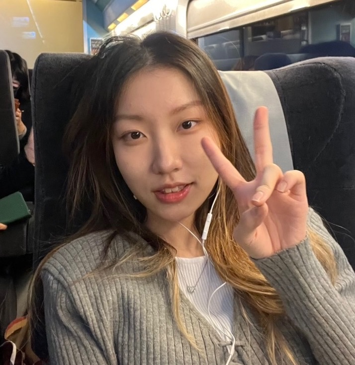
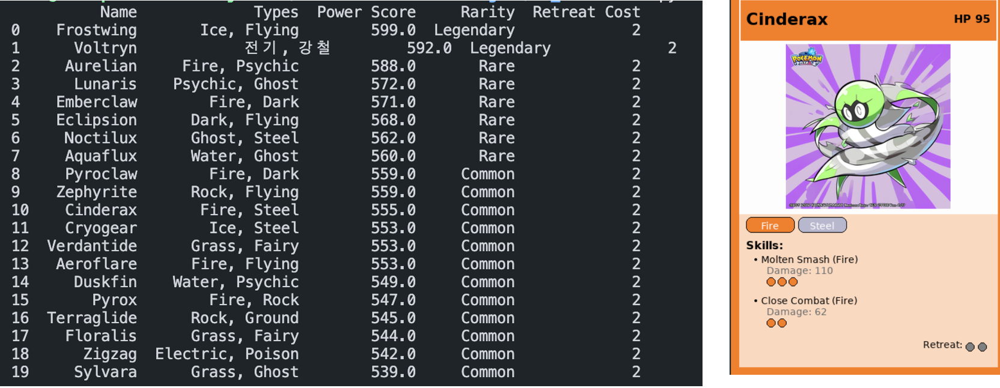
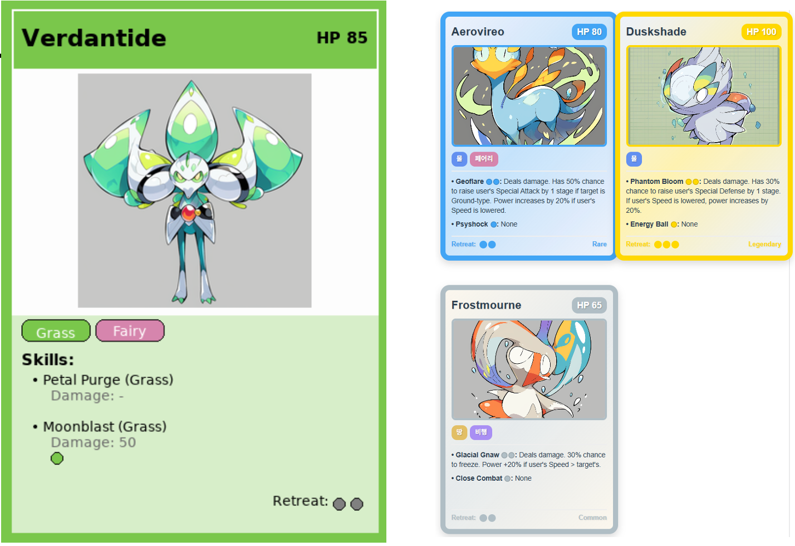

|
Minji Jung
I'm an undergraduate (junior) at Yonsei University in South Korea, majoring in Artificial Intelligence (AI).
I'm an engineer with a glowing passion to become a better and greater person than yesterday.
One day, I hope to become a well-known engineer in the industry.
Expected to graduate in Feb. 2027.
Email /
CV /
Github
|

|
Research Interests
Large Language Models (LLMs)
Reliability, adaptation, and tool use, with a focus on LLMs as core reasoning modules.
Agent Systems
LLM-driven single- and multi-agent architectures, including protocol-based coordination and planning.
Long-term Goal
Building scalable and reliable AI assistants capable of reasoning, acting, and managing complex systems.
|
My Projects
|
|
Day vs. Night Classification
Minji Jung
Course Project
Dec. 2025
Github link
End‑to‑end image classification pipeline to distinguish day vs. night scenes.
Implemented a naïve brightness‑threshold baseline and compared it with a zero‑shot CLIP model
|


|
AI‑Driven POKÉMON Card Generator
Minji Jung, in DS Team of 4
YBIGTA Summer Project
Aug. 2025
Github link
Built an AI pipeline for novel Pokémon cards from the concept of ResearchAgent.
[Card Generation]
LLM-driven concept design → structured specs → text-to-image Generalization.
|
|
|
MoMuGo — Local Restaurant Recommender
Minji Jung, in the 26th Newbie Team of 4
YBIGTA Newbie Project (Winter 2025)
Feb. 2025
Github link
Built a restaurant recommender for Hapjeong / Seogyo-dong.
Implemented a LangChain-Pinecone RAG pipeline to retrieve reviews and generate natural-language explanations.
|
|
|
KiNi — Community Delivery Web App
Minji Jung, in a team of 5
RC Creative Platform (sponsored by Nexon Korea)
Apr. 2023 ‑ Nov. 2023
Built a community delivery web app for aging towns, with user flow and UX tailored for elderly accessibility.
Fetched categorized data from Firebase and developed reusable React pages.
|
Skills
I can use programming languages such as:
C, C++, Python, Web programming languages (HTML, CSS, React), MATLAB, SQL.
I have knowledge of:
Deep Learning, Machine Learning and its mathematical logic, Computer Operating Systems.
I am good at:
English (TOEIC 980 / 990), Figma, Git.
|
Honors & Awards
|
2025
Gold Prize
Yonsei 3rd GenAI Competiton
among 12 Finalist Teams, by Yonsei University
Excellence Award, (ETRI President Award)
2025 KoMaP AI Competition
by the Ministry of Trade, Industry and Energy (MOTIE) and KIAT, organized by ETRI, KRICT, and KICET
Excellence Award
2025 LLM Query Hackathon
Top 3 among 8 Finalists, by Yonsei University, YBIGTA, and Upstage
Departmental Honors Scholarship
in AI–Business Convergence (Major)
by the Department of Artificial Intelligence, Yonsei University
|
Extracurricular Activities
|
Present
Yonsei Big Data Club (YBIGTA)
Education Committee Member
Designed and graded onboarding assignments for Cohort 27 and facilitated weekly sessions.
Yonsei Computer Club (YCC)
Club Member
Studies: n8n (25‑2), C / C++ (25‑1), React (24‑1), Figma (23‑2).
AI Band Club (ABC)
Vocal
Performed as main and backup vocalist (23‑2) in the band’s first solo concert.
|
Website template by Jon Barron (Github).
| |
{kind=link}